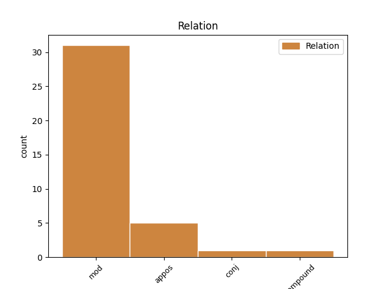
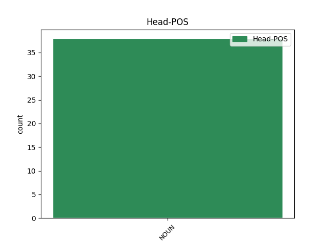
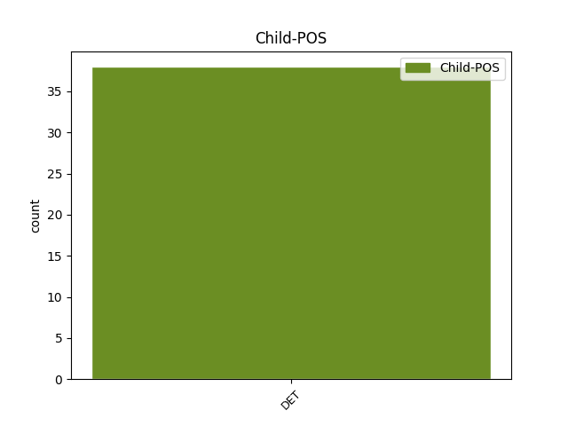

Distribution of features within this leaf



Agreement Rules sorted by frequency.
- When the dependent token is the modifer(mod) of the head token, and the head token is NOUN and the dependent token is DET.
1 Uansett _ _ _ _ 0 _ _ _
2 kan _ _ _ _ 0 _ _ _
3 Sirte _ _ _ _ 0 _ _ _
4 , _ _ _ _ 0 _ _ _
5 hvis hvis DET _ Case=Gen|Gender=Masc|Number=Sing|PronType=Dem 6 mod _ _
6 innbyggere innbygger NOUN _ Definite=Ind|Gender=Masc|Number=Plur 0 _ _ _
7 nå _ _ _ _ 0 _ _ _
8 skal _ _ _ _ 0 _ _ _
9 være _ _ _ _ 0 _ _ _
10 i _ _ _ _ 0 _ _ _
11 forhandlinger _ _ _ _ 0 _ _ _
12 med _ _ _ _ 0 _ _ _
13 Gaddafis _ _ _ _ 0 _ _ _
14 fiender _ _ _ _ 0 _ _ _
15 , _ _ _ _ 0 _ _ _
16 snart _ _ _ _ 0 _ _ _
17 være _ _ _ _ 0 _ _ _
18 en _ _ _ _ 0 _ _ _
19 av _ _ _ _ 0 _ _ _
20 Libyas _ _ _ _ 0 _ _ _
21 mest _ _ _ _ 0 _ _ _
22 interessante _ _ _ _ 0 _ _ _
23 byer _ _ _ _ 0 _ _ _
24 . _ _ _ _ 0 _ _ _
1 Abstinensen abstinens NOUN _ Definite=Def|Gender=Masc|Number=Sing 0 _ _ _
2 var _ _ _ _ 0 _ _ _
3 den _ _ _ _ 0 _ _ _
4 samme _ _ _ _ 0 _ _ _
5 , _ _ _ _ 0 _ _ _
6 den den DET _ Gender=Masc|Number=Sing|PronType=Dem 1 appos _ _
7 som _ _ _ _ 0 _ _ _
8 ikke _ _ _ _ 0 _ _ _
9 bygger _ _ _ _ 0 _ _ _
10 på _ _ _ _ 0 _ _ _
11 den _ _ _ _ 0 _ _ _
12 egentlige _ _ _ _ 0 _ _ _
13 lykken _ _ _ _ 0 _ _ _
14 eller _ _ _ _ 0 _ _ _
15 følelsen _ _ _ _ 0 _ _ _
16 av _ _ _ _ 0 _ _ _
17 rusmidlene _ _ _ _ 0 _ _ _
18 man _ _ _ _ 0 _ _ _
19 tar _ _ _ _ 0 _ _ _
20 , _ _ _ _ 0 _ _ _
21 men _ _ _ _ 0 _ _ _
22 snarere _ _ _ _ 0 _ _ _
23 på _ _ _ _ 0 _ _ _
24 redselen _ _ _ _ 0 _ _ _
25 og _ _ _ _ 0 _ _ _
26 angsten _ _ _ _ 0 _ _ _
27 som _ _ _ _ 0 _ _ _
28 kommer _ _ _ _ 0 _ _ _
29 når _ _ _ _ 0 _ _ _
30 man _ _ _ _ 0 _ _ _
31 ikke _ _ _ _ 0 _ _ _
32 tar _ _ _ _ 0 _ _ _
33 den _ _ _ _ 0 _ _ _
34 . _ _ _ _ 0 _ _ _
Disagree Examples:
1 I _ _ _ _ 0 _ _ _
2 Kofi _ _ _ _ 0 _ _ _
3 Annan _ _ _ _ 0 _ _ _
4 , _ _ _ _ 0 _ _ _
5 som _ _ _ _ 0 _ _ _
6 ble _ _ _ _ 0 _ _ _
7 valgt _ _ _ _ 0 _ _ _
8 til _ _ _ _ 0 _ _ _
9 generalsekretær _ _ _ _ 0 _ _ _
10 for _ _ _ _ 0 _ _ _
11 snart _ _ _ _ 0 _ _ _
12 fem _ _ _ _ 0 _ _ _
13 år _ _ _ _ 0 _ _ _
14 siden _ _ _ _ 0 _ _ _
15 , _ _ _ _ 0 _ _ _
16 har _ _ _ _ 0 _ _ _
17 FN _ _ _ _ 0 _ _ _
18 fått _ _ _ _ 0 _ _ _
19 en _ _ _ _ 0 _ _ _
20 uvanlig _ _ _ _ 0 _ _ _
21 engasjert _ _ _ _ 0 _ _ _
22 leder _ _ _ _ 0 _ _ _
23 som _ _ _ _ 0 _ _ _
24 har _ _ _ _ 0 _ _ _
25 satt _ _ _ _ 0 _ _ _
26 sterkt _ _ _ _ 0 _ _ _
27 preg _ _ _ _ 0 _ _ _
28 på _ _ _ _ 0 _ _ _
29 verdensorganisasjonen _ _ _ _ 0 _ _ _
30 og _ _ _ _ 0 _ _ _
31 dens den DET _ Case=Gen|Gender=Masc|Number=Sing|PronType=Dem 32 mod _ _
32 fokus fokus NOUN _ Definite=Ind|Gender=Neut|Number=Sing 0 _ _ _
33 . _ _ _ _ 0 _ _ _
1 " _ _ _ _ 0 _ _ _
2 Den _ _ _ _ 0 _ _ _
3 norske _ _ _ _ 0 _ _ _
4 Nobelkomité _ _ _ _ 0 _ _ _
5 ønsker _ _ _ _ 0 _ _ _
6 både _ _ _ _ 0 _ _ _
7 å _ _ _ _ 0 _ _ _
8 hedre _ _ _ _ 0 _ _ _
9 det _ _ _ _ 0 _ _ _
10 arbeid _ _ _ _ 0 _ _ _
11 som _ _ _ _ 0 _ _ _
12 FN _ _ _ _ 0 _ _ _
13 og _ _ _ _ 0 _ _ _
14 dets det DET _ Case=Gen|Gender=Neut|Number=Sing|PronType=Dem 15 mod _ _
15 generalsekretær generalsekretær NOUN _ Definite=Ind|Gender=Masc|Number=Sing 0 _ _ _
16 Kofi _ _ _ _ 0 _ _ _
17 Annan _ _ _ _ 0 _ _ _
18 allerede _ _ _ _ 0 _ _ _
19 har _ _ _ _ 0 _ _ _
20 gjort _ _ _ _ 0 _ _ _
21 , _ _ _ _ 0 _ _ _
22 og _ _ _ _ 0 _ _ _
23 å _ _ _ _ 0 _ _ _
24 oppmuntre _ _ _ _ 0 _ _ _
25 dem _ _ _ _ 0 _ _ _
26 til _ _ _ _ 0 _ _ _
27 å _ _ _ _ 0 _ _ _
28 gå _ _ _ _ 0 _ _ _
29 videre _ _ _ _ 0 _ _ _
30 på _ _ _ _ 0 _ _ _
31 veien _ _ _ _ 0 _ _ _
32 mot _ _ _ _ 0 _ _ _
33 et _ _ _ _ 0 _ _ _
34 enda _ _ _ _ 0 _ _ _
35 mer _ _ _ _ 0 _ _ _
36 handlekraftig _ _ _ _ 0 _ _ _
37 FN _ _ _ _ 0 _ _ _
38 " _ _ _ _ 0 _ _ _
39 , _ _ _ _ 0 _ _ _
40 avsluttet _ _ _ _ 0 _ _ _
41 Berge _ _ _ _ 0 _ _ _
42 . _ _ _ _ 0 _ _ _
1 Tirsdag _ _ _ _ 0 _ _ _
2 ble _ _ _ _ 0 _ _ _
3 FN _ _ _ _ 0 _ _ _
4 , _ _ _ _ 0 _ _ _
5 dets det DET _ Case=Gen|Gender=Neut|Number=Sing|PronType=Dem 6 mod _ _
6 leder leder NOUN _ Definite=Ind|Gender=Masc|Number=Sing 0 _ _ _
7 Kofi _ _ _ _ 0 _ _ _
8 Annan _ _ _ _ 0 _ _ _
9 og _ _ _ _ 0 _ _ _
10 freden _ _ _ _ 0 _ _ _
11 behørig _ _ _ _ 0 _ _ _
12 feiret _ _ _ _ 0 _ _ _
13 i _ _ _ _ 0 _ _ _
14 Oslo _ _ _ _ 0 _ _ _
15 Spektrum _ _ _ _ 0 _ _ _
16 av _ _ _ _ 0 _ _ _
17 vanlige _ _ _ _ 0 _ _ _
18 folk _ _ _ _ 0 _ _ _
19 og _ _ _ _ 0 _ _ _
20 av _ _ _ _ 0 _ _ _
21 et _ _ _ _ 0 _ _ _
22 imponerende _ _ _ _ 0 _ _ _
23 antall _ _ _ _ 0 _ _ _
24 nobeliteter _ _ _ _ 0 _ _ _
25 . _ _ _ _ 0 _ _ _
1 Fugleinfluensaen _ _ _ _ 0 _ _ _
2 er _ _ _ _ 0 _ _ _
3 WHOs _ _ _ _ 0 _ _ _
4 hovedutfordring hovedutfordring NOUN _ Definite=Ind|Gender=Fem|Number=Sing 0 _ _ _
5 nummer _ _ _ _ 0 _ _ _
6 en en DET _ Gender=Masc|Number=Sing|PronType=Art 4 mod _ _
7 i _ _ _ _ 0 _ _ _
8 disse _ _ _ _ 0 _ _ _
9 dager _ _ _ _ 0 _ _ _
10 . _ _ _ _ 0 _ _ _
1 - _ _ _ _ 0 _ _ _
2 Har _ _ _ _ 0 _ _ _
3 ikke _ _ _ _ 0 _ _ _
4 tørsten _ _ _ _ 0 _ _ _
5 etter _ _ _ _ 0 _ _ _
6 penger _ _ _ _ 0 _ _ _
7 , _ _ _ _ 0 _ _ _
8 etter _ _ _ _ 0 _ _ _
9 eiendeler _ _ _ _ 0 _ _ _
10 , _ _ _ _ 0 _ _ _
11 etter _ _ _ _ 0 _ _ _
12 makt _ _ _ _ 0 _ _ _
13 og _ _ _ _ 0 _ _ _
14 til _ _ _ _ 0 _ _ _
15 og _ _ _ _ 0 _ _ _
16 med _ _ _ _ 0 _ _ _
17 etter _ _ _ _ 0 _ _ _
18 kunnskap _ _ _ _ 0 _ _ _
19 bortledet _ _ _ _ 0 _ _ _
20 mennesket _ _ _ _ 0 _ _ _
21 fra _ _ _ _ 0 _ _ _
22 dets det DET _ Case=Gen|Gender=Neut|Number=Sing|PronType=Dem 24 mod _ _
23 sanne _ _ _ _ 0 _ _ _
24 skjebne skjebne NOUN _ Definite=Ind|Gender=Masc|Number=Sing 0 _ _ _
25 ? _ _ _ _ 0 _ _ _
26 spurte _ _ _ _ 0 _ _ _
27 han _ _ _ _ 0 _ _ _
28 . _ _ _ _ 0 _ _ _